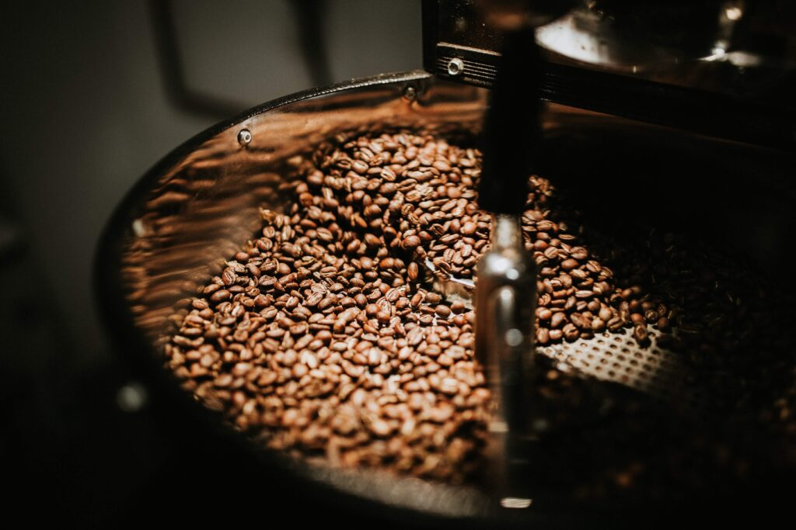

Защо спешълти кафето си струва?
За средностатистическия кафе любител е трудно да се обясни защо някой би платил над 100 лева за килограм кафе. Все пак в супермаркетите цените на най-популярните кафе брандове не надвишават 30 лв, а същите имат удовлетворително силен стимулиращ ефект и приятен вкус (особено като добавиш мляко и захар).
Тогава какво прави Спешълти кафето толкова специално? Струва ли си да го опитаме и ако да – защо?
Всъщност, според проучване на Nielsen от 2019-та година 85% от българите пият кафе всеки ден, а 64% от тях го правят единствено заради ободряващите му свойства. И въпреки това някои хора продължават да заделят повече средства от месечния си бюджет, за да могат да си набавят по-висок клас кафе. Каква е тяхната мотивация? Нека видим!
Какво е Спешълти кафе?
За разлика от кафето, което може да се намери в супермаркета и кварталното магазинче, спешълти кафето е отглеждано с много повече грижа и внимание към качеството.
Специалните кафе зърна са плод на усилен труд на фермерите, които с внимание към детайла са отгледали и обработили кафе черешите по оптимален начин, за достигане на отличен вкусов профил.

Ароматът и вкусовите нотки на спешълти кафето са несравнимо по-добри и комплексни от тези на обикновеното кафе. Струва си също да споменем, че кафе производството е много дълъг и сложен процес.
Често, за да се минимизират разходите, по-големи кафе производители използват по-евтини техники за бране, сортиране и процесиране на зърната. Това неминуемо води до по-ниско качество и неприятен вкус. Донякъде това може да обясни защо много от хората не могат да пият кафето си без добавки като мляко, сметана и захар.
Фермерите, които произвеждат спешълти кафе, не пестят средства за поддържане на високо качество на реколтата си.
Честа практика е обикновеното кафе да бъде тъмно изпечено. Това се дължи на факта, че колкото по-дълго се пекат, толкова повече кафе зърната губят своите същностни вкусови характеристики.
Истината е, че големите компании са наясно, че кафе зърната, които ползват са некачествени и не дотам приятни на вкус, поради което ги замаскират със силните вкусове на изпичане.
При тъмно изпеченото кафе горчивината често надделява, което прави вкуса не-дотам приятен.
За разлика от обикновеното кафе, спешълти кафето е често по-светло изпечено, с по-изразена киселинност.
В него можете да доловите характерните за сорта и мястото на производство вкусови нотки (флорални, цитрусови, плодови и т.н.).
Комбинацията от високо качество на кафе зърната и прецизността на изпичане обуславят по-комплексния и вълнуващ вкус на спешълти кафето.
Затова често хора, които се преориентират към кафета от висок клас, спират да изпитват необходимост да добавят мляко и захар към сутрешната си напитка.
Освен всичко останало, трябва да обърнем внимание и на друг много важен фактор – устойчивостта.
На световния пазар за кафе, всяка година се определя цена, на която се изкупува реколтата на фермерите производители (C-price).
За жалост много често тази цена не достига на фермерите да генерират печалба.
Още повече – те изпитват затруднения да заплащат на работниците си, което води до неетични работни практики.
Всяка година много фермери са принудени да прекратят дейността си, да опожарят кафе растенията и да ги заменят с реколта, която носи повече печалба.
Дори и да запазят кафе растенията си, ниската цена за изкупуване на кафе допълнително намаля качеството на последващите реколти, тъй като фермерите се опитват всячески да намалят разходите по производство.
От друга страна, спешълти кафето се изкупува на достатъчно висока цена, която да стимулира фермерите да продължават да подобряват качеството на производството.
Още повече – често пекарите и кафе предприемачите, които закупуват спешълти кафе, поддържат пряк контакт с фермерите и им дават обратна връзка.
Така те могат да допринесат за подобряване на качеството на продукцията в самия й корен. Когато закупувате спешълти кафе, вие получавате информация за неговия произход, сорт, ключови вкусови характеристики.
Освен това специалното кафе е винаги прясно изпечено, за което свидетелства датата на изпичане, която присъства на всеки етикет.
Спешълти Кафе Класификация: Стандартът.
За да бъдат кафе зърната класифицирани в категорията Specialty (специални), лицензирани кафе експерти оценяват техните характеристики, съобразно международно признатата система за оценка на Specialty Coffee Association.
Кафе класьорите следват стриктна процедура за оценяване, която води своето начало от анализ на зелените кафе зърна.
Те вземат 300 грама зърна от всяка партида, измерват тяхната влажност, отчитат хомогенността им от гледна точка на размер и после търсят дефекти.
Дефектите са разделени в две категории – първични и вторични. Първичните дефекти имат много по-осезаем негативен ефект върху финалния вкус на кафето.
Вторичните дефекти не влияят толкова силно върху вкусовия профил.
Според броя на първични и вторични дефекти, зеленото кафе се класифицира в 5 различни класа. Клас 1 е най-високият. При него липсват първични дефекти и се допускат до 5 вторични.
След оценката на зелените кафе зърна, те се изпичат и сертифицирани дегустатури правят сетивен анализ на вече приготвеното кафе.
Експертите дават оценка от 0 до 100 на базата на характеристики като вкус, аромат, плътност, киселинност, баланс и т.н. Спешълти кафето (Specialty coffee) е термин, използван за кафе, което е от Клас 1 и което е получило 80 или над 80 точки на сетивния анализ.
За наша жалост, кафето, което достига до домовете на повечето потребители не е от високо качество. Така хората не могат да се насладят на удоволствието, което истински качественото кафе може да им достави.
Ако искате да опитате Спешълти кафе от висок клас с проследим произход и уникален вкусов профил, можете да разгледате нашите Caldo Specialty Coffee предложения, натискайки тук.
Често по етикетите на пакетираните кафета в магазините ще откриете надписи “100% Арабика” и “Гурме”.
Тези надписи не говорят за качеството на зърната, а се използват, за да подведат неинформирани потребители, че продуктите са от висок клас.
Единствено надпис “Premium” дава индикация, че кафето е било класифицирано в клас 2 след инспекция на зелените кафе зърна.
Финални Думи
След като поставихме основите на твоето кафе пътешествие с тази статия, е важно да кажем – финалния вкус на сутрешното ти спешълти кафе зависи от теб самия.
Положи старание в приготвянето на своята кофеинова напитка и ще изпиташ неописуемо удовлетворение, когато усетиш вкусовете, които успешно си извлякъл.
Можеш да разгледаш тази статия, в която даваме насоки за това как да приготвиш неустоимо вкусно кафе вкъщи.
Надяваме се статията да ти е била полезна и да сме провокирали интереса ти да опиташ истински качествено спешълти кафе.
Ако имаш допълнителни въпроси, остави коментар в секцията отдолу. Ще се радваме да бъдем полезни!